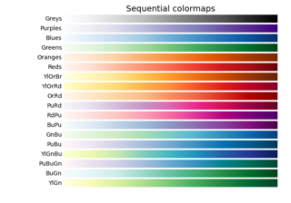

matplotlib.figure.Figure.tight_layout#
- Figure.tight_layout(*, pad=1.08, h_pad=None, w_pad=None, rect=None)[source]#
Adjust the padding between and around subplots.
To exclude an artist on the Axes from the bounding box calculation that determines the subplot parameters (i.e. legend, or annotation), set
a.set_in_layout(False)for that artist.- Parameters:
- padfloat, default: 1.08
Padding between the figure edge and the edges of subplots, as a fraction of the font size.
- h_pad, w_padfloat, default: pad
Padding (height/width) between edges of adjacent subplots, as a fraction of the font size.
- recttuple (left, bottom, right, top), default: (0, 0, 1, 1)
A rectangle in normalized figure coordinates into which the whole subplots area (including labels) will fit.
Examples using matplotlib.figure.Figure.tight_layout#
Contour image

pcolor images


Triinterp Demo
Fill the area between two lines
Fill the area between two lines

Marker reference
Scatter Demo2
Logit scale

Symlog scale


Demo of the histogram function's different histtype settings
Demo of the histogram function's different histtype settings

The histogram (hist) function with multiple data sets
The histogram (hist) function with multiple data sets
Equal axis aspect ratio


Create multiple subplots using plt.subplots
Create multiple subplots using plt.subplots


Radian ticks



Choosing Colormaps in Matplotlib
Choosing Colormaps in Matplotlib